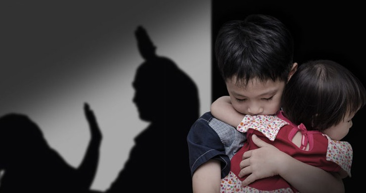

Violencia Familiar
PLANTEL 17 HUIXQUILUCAN II COLEGIO DE BACHILLERES DEL ESTADO DE MEXICO
| ¿Qué es la violencia de familiar? La violencia familiar es un término utilizado para describir la violencia y el abuso de familiares o una pareja íntima, como un cónyuge, ex cónyuge, novio o novia, ex novio o ex novia, o alguien con quien se tiene una cita. | ¿Qué es la violencia y porque se da? Se define la violencia com el uso intencional de la fuerza o el poder físico, de hecho o como amenaza, contra uno mismo, otra persona o un grupo o comunidad, | ¿Cuales son sus características? La violencia son todos los comportamientos y situaciones que amenazan la integridad física, psicológica o moral de las personas. |  |
| ¿Cuáles son los tipos de violencia que se dan en la familia? Violencia familiar Maltrato de pareja íntima. Violencia doméstica. Maltrato infantil. Abuso físico. Violencia en el noviazgo. Violación marital. Violación perpetrada por una persona con la que se tiene una cita. Acoso. | ¿Cuáles son las causas principales de la violencia?
Las causas de la violencia más comunes son: el alcoholismo, la intolerancia, la drogadicción, la ignorancia y la falta de moderación y control.
|
¿Cuáles son los 10 tipos de familia? Familia sin hijos Familia biparental con hijos Familia homoparental Familia reconstituida o compuesta Familia monoparental Familia de acogida Familia adoptiva Familia extensa. |